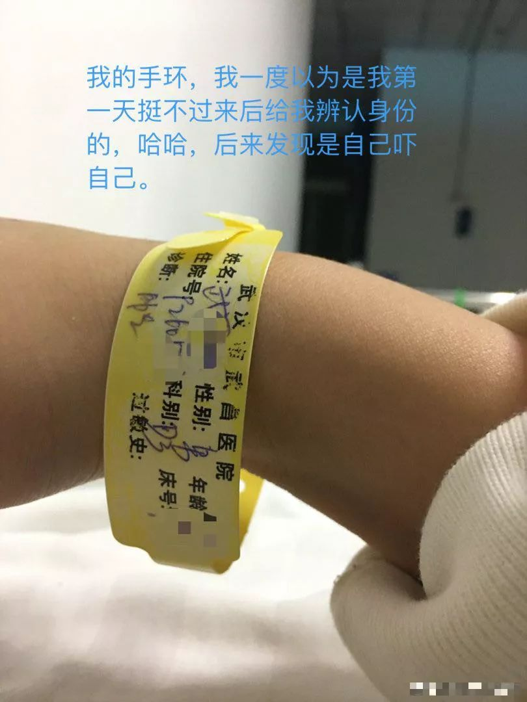
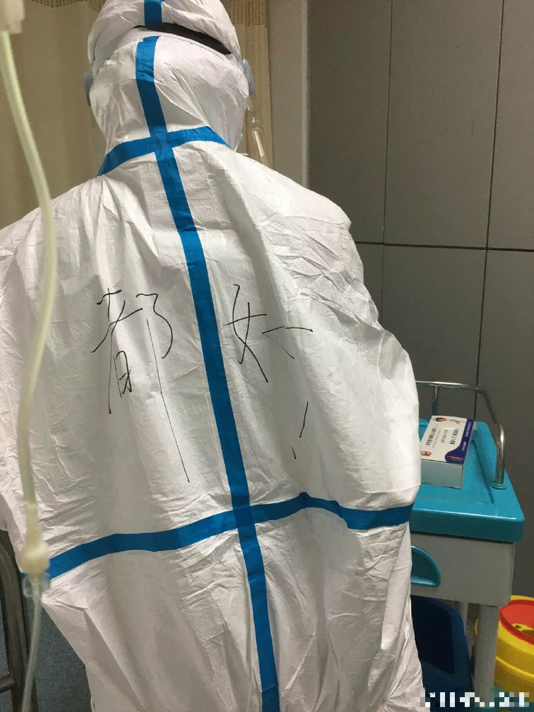
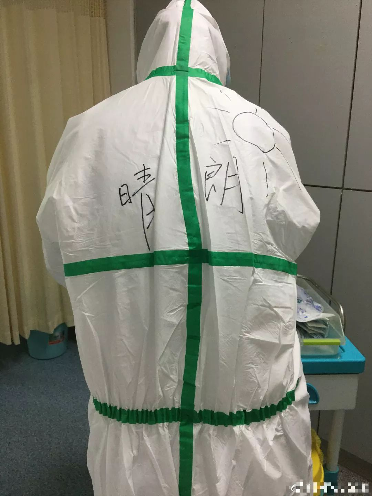
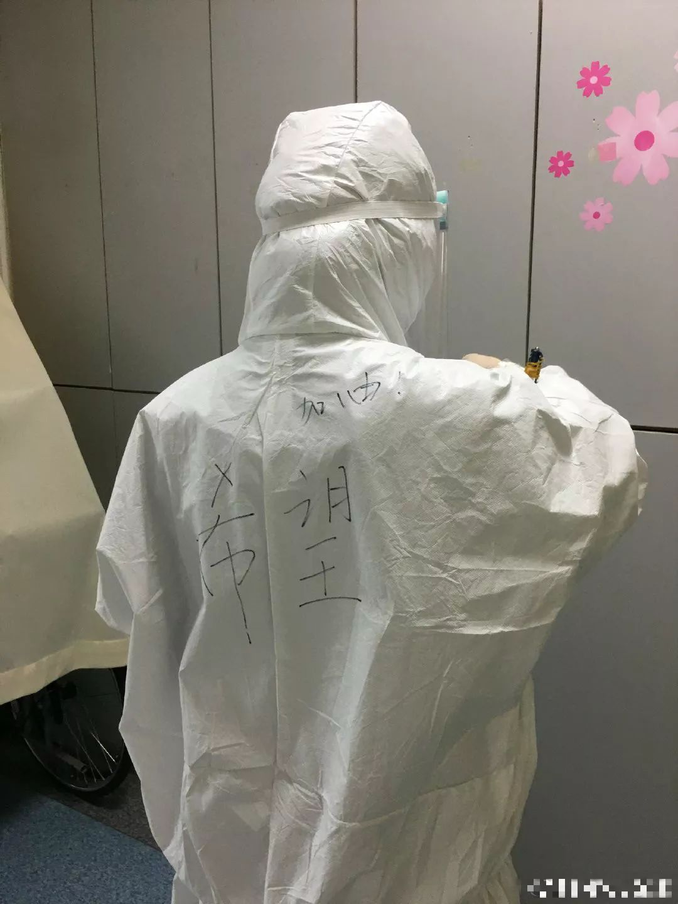

作家方方：疫情看上去稳定，但人心似不太稳（57）-作家方方-财新博客-新世纪的常识传播者-财新网
原文链接 备份链接 3月21日。 封城第59天。这么长时间了！ 昨天那么大的太阳，今天突然就阴了。下午还下了点雨。这时节的春雨，对于院子里的树以及花，都还是很需要的。前两三天，武大樱花盛开，树下空荡无人，估计是记者拍了一些照片，同学群里便 …
澎湃新闻记者 赵思维 发自武汉 实习生 夏梦洁
从1月23日21时许发出第一条求助微博，25岁的新冠肺炎痊愈者武康发布了50余条微博，粉丝从1000涨至现在的179万粉丝。
这些微博记录了他从发病住不进院的无助、被病魔折磨的痛苦、亲人好友陪伴的温情、医护耐心诊疗的敬业、受到网友鼓励的感觉以及痊愈出院的开心。
网友“小武@BIGWUGOD”起落的心境、身体的状态通过文图透过屏幕“刺向”每天关注着他的这些粉丝，“今天还好吗？”“怎么样了？”，等待“小武@BIGWUGOD”更新微博成为很多粉丝的期待。
当无助、辛酸遇上爱情、亲情、友情，一部浓缩的26天求医史得以“直播”给众人。
在接受澎湃新闻采访时，武康一连串列了好几个要感谢的人，他觉得这个特殊的2020年新年，足以让他记忆深刻。
他感慨：“这是我的新生。”
以下为武康口述：
我叫武康（化名），是一名曾给自己写下了遗书又删掉的新冠肺炎重症患者，现在我痊愈了。
第一次从重症室病床上熟睡中醒来，看到来打针的护士姐姐背上写着“都好”两个字，她和我打趣说，她比我小，我不应该叫她姐姐。
出院前，我看到了一位护士姐姐的名字反过来念就是“希望”，她的防护服上也写着“希望”。
她们医护人员的坚守，给了我们这些病人希望。

武康住院期间佩戴的黄色手环 本文图片均为受访者提供
父亲偷偷在医院排队，“赶”不走
生活的“奥妙”之一就是它的不确定性，就如我感染上新冠病毒。
1月19日，我在汉口火车站匆匆吃了顿饭，前后待了一个半小时。当天下午，感到身体有些不舒服，“没有力气”，晚上就出现了腹泻、高烧等症状，烧到39度。
那时候身边几乎所有的亲朋好友，没有任何人有新冠肺炎表现出的症状，我以为自己只是吃坏了肚子，一直按照普通发烧来治疗。在吃了女朋友帮我买的退烧药和感冒药后，烧退了但是疯狂拉肚子，就是在“拉水”。
20日，钟南山院士在接受媒体采访时明确表示新冠肺炎有人传人的迹象，女朋友把这个消息告诉了我。我开始怀疑自己是否染上，但是周边同事朋友没有一个人感染，我就继续在床上躺着吃药，好在不发烧了，但腹泻依旧。
21日，发热的症状又缠上了我，38.8度不退。四肢酸痛、咳嗽加剧，洗澡时咳出的痰中还带着血丝，我开始觉得不对劲，赶紧让女朋友和我隔开，让千万别来找我。
我随即前往武警医院、湖北省中医院检查。中医院医生检查后，告诉我双肺感染，基本可以确定是新冠肺炎。伴随的坏消息是医院无法收治我，想要开药和打针需直接找别的医院。
查询发现武汉市第七医院可以住院，但赶过去后医院正在改造，第二天才能进，我又匆匆赶往武昌医院。
武昌医院的医生查看后也发现我的症状很像新冠肺炎，给我开了抗病毒的药，开了住院证。告诉我次日6点来才有空床位可以入住。
当天晚上11点多，我父母又打听到武汉市第七医院开放收治像我这类的病人，我爸就偷偷帮我去排队，他排了很久，只为让我多睡一会，然后打电话叫醒我，让我去看病。
我当时很难受，让他赶快走，他不听。我赶到后“赶”他离开，他就躲在外面玻璃窗偷看我，我怎么“赶”都没用。
在武汉市第七医院，医生检查后也说我的症状基本是新冠肺炎，但检测试纸用完了，无法给我确诊和提供住院，让自行回家隔离。
我问他，“我就这么回去吗？”还记得那位年轻医生用很平静和抱歉的眼神看着我说，“我比你更难受，因为我见了很多，但是却帮不上忙。”
我劝别我爸后，回到自己住的地方开始自我隔离。我给朋友们打了电话作为告别，说了什么我记不清了，印象最深的那句话是“可能以后就没我这个人了吧。”
22日下午4点，我拿着住院证去武昌医院，一直等到晚上6点，却被告知床位已满，无法住院。现场等待住院签字的病人都被劝返，护士说唯一可以签字的主任去抢救病人了，没有主任签字的住院单作废。
此时我呼吸已经很急促，背上肺部位置有明显负重感，咳嗽咳血加重，四肢无力。和病友交流，他们说我的病症速率很快。
没办法，我再次回到家中隔离，拒绝父母女友过来照顾。
当时能查到的定点医院，都只接受病危病人，认识的几个病友依旧徒劳奔波。我实在不知道我的情况，什么时候会突然病危，什么时候可以住院救治，只能靠着朋友、家人、女友的鼓励硬抗。
另一边，我也十分担心和我接触的亲人好友感染，电话得知我妈也有轻微症状后，特别害怕，我不想让他们尝到我身处的困境。
次日，武汉“封城”。
“封城”当晚21时48分，我在微博了发了第一条我与新冠肺炎有关的帖子，描述了我前几天的遭遇和当天的情况，底部@了“武汉发布”、“武汉市长专线”、“武汉市卫生健康委员会”以及诸多媒体。
我实在想不出可以自救的办法。
帖子发出后，有上万人评论、点赞、转发，他们一边在评论区、私信鼓励我，一边转发呼吁帮帮我。素未谋面，我特别感动。
24日，我身体出现了一个新症状，每隔几分钟，快睡着的时候，胸腔就会响一声，一下子激醒我。依旧是咳嗽、四肢酸痛、疯狂拉肚子。爸妈做了十几个菜送过来放在门口，但都被我放进冰箱，实在吃不下去。我奢求不住院了，能打个针就行。
25日，事情有所转机。我所在的社区登记了我的信息，并帮我预约了医生，让我等消息。我的公司也知晓了我的情况，同事们都十分关心我，主动联系问候并为我买了血氧仪，说是后续药物也会帮我购买。
26日，持续发烧，状态变得很差，社区安排了电瓶车接我和另一位病人去武昌医院就诊，我也终于打上了针。医生护士都很好，很细心的告诉我怎么走、怎么排队。
这一天，之前在武昌医院结识的一对年轻患病夫妻给我发来消息，得知他们病情有所好转，我很开心。记得相识那天，我当时也是有感而发，跟他们说，“如果上天能让我们度过这次难关，一定好好热爱生活，感恩人生。”没想到那哥们能一直记住。
其实，我一直这么想，要是我“扛”过去了，我一定感恩生活中的每一件小事，再也不和家人女友吵架，多和好友聚聚。我还想去现场看Ti中国举盾（TI是DOTA2一年一度的世界性比赛）、想看LPL三连冠、想看韦神17夺冠、想看中国再出几个NBA选手、想看国足进世界杯……
写下遗书又删掉
从1月19日出现症状，折腾了好几天，26日，我终于住进了武昌医院。

武康住院期间的床位
当时住进来的时候，也不知道自己究竟是什么情况，出院后才知道，我意识模糊的时候，女朋友拜托了很多朋友打听到，我进的是重症病区。但是从头到尾，医护人员和身边朋友，全都没跟我说过。朋友们每天都会给我发搞笑视频，医护人员每天和我交谈也不提“重症”、“病危”的字眼。
但我自己能隐约感受到，我处境不太好。
住进来那天晚上，有两位医生给我做CT，当时一位医生看完CT后说了一句，“怎么才三天（医生从23日开始算）就这样了？”我听后心里凉了一截。主任医生拉走那位医生，然后跟我说，“放心，不是特别严重，你还年轻，肯定可以治愈的。”我当时眼泪就流下来了，我知道他可能是善意的谎言，但是我真的很感激他，特别感激。
整个住院治疗期间，每天都要吃好多药，打很多针。当时，我有偷偷写下遗书，但是不久就删掉了。
每天最大的挑战就是自己撑起来拔氧管吃药，药真的太多了。清早趁我还没打针，我爸会送免疫球蛋白来，他远远的放在门口，然后一步三回头，等他走远了我才会去拿。我不知道这个免疫球蛋白还要打多久，每天四五瓶，太贵了。
我和爸妈只说过病情，但至于身体有多难受，我只敢和朋友说。
我在微博上连续发布我每天的状态和治疗过程，起初是为了求救，后来就转变为分享自身病状，希望能帮到其他人。有很多热心网友都会不厌其烦的私信安慰我、鼓励我，我没法一一回复，每次写长文都是断断续续写好久，身体还是很虚弱。
住院的那段时间，护士每天7点会来给我们量体温，37.2度以上算是发烧，血氧95以上算正常。如果需要抽血做血常规检查，就要从早上5点开始抽。
2月3日那天，我一觉睡到8点多，是那段时间睡得“最沉”的一觉，早餐的豆沙包我爱吃，就都吃完了。起来之后，看到来打针的护士姐姐背上写着“都好”两个字，她和我打趣说，她比我小，我不应该叫她姐姐。

武康住院期间，一位护士背部写着“都好”，寓意一切都顺利
这些护士们平均20岁出头，都很年轻，有的比我还小。他们每天在病房里来回穿梭，病人输液、换瓶或者有什么情况时就会按响铃声，护士台中心就会呼叫，呼叫声一个接一个，基本很少停。看到好多来给我换瓶的护士，靠着墙稍微歇息，呼哧呼哧大口喘气，防护镜上全是水汽，我眼睛会不自觉泛酸。
有一次，看见给我打针的护士妹妹防护服背后写的是“晴朗”，她解释，她觉得这场疫情持续这么久了，应该是时候开始“转晴”了吧？病友们看到了则打趣说：“不对，应该写‘晴转阴’啊，哈哈。”核酸检测阴性大家都很期盼。

我们病房里有一位80多岁的老奶奶，她很可爱。刚开始的饭餐都是志愿者送来的，奶奶每天吃饭前都像在祷告一样，“感谢这些志愿者、好心人送的餐。”每次对着饭菜说完才吃。
4日，我连着几天都没有发烧，3日晚上那个难扛下去的胸腔频率也降低了很多，大概只出现了四五次。但是咳嗽依旧，总归是在往好的方面发展，我安慰自己。这一天，打针时我的右手打不进去改打了左手，没有打留置针，两只手小臂和手腕都很疼，医生和我说针打多了是会有点疼。
5日，分早餐的护士妹妹最后又来了一趟，和我们说有多的早餐，还要不要？同病房的一个大叔又要了袋酸奶说，“不要白不要。”我们都在笑，一早上气氛很好，大家都很乐观。同病房那个“话最多”的阿姨也出院了，以前偶尔觉得她有一点吵，但病房没了她，一下子变得很安静，我还是有点不习惯。但我想，她和她的家人一定会热闹开心。
6日，没有护士姐姐来给我打针，因为护士长通知说，我可以收拾一下，去方舱医院隔离。刚开始我有些担忧，因为网上一些言论，让我不免担心方舱的治疗条件不好。不过因为要继续输液没有去成。后来看，大家在方舱都挺好，没必要特别担心。
8日，是元宵节。我去做了CT，与住院进来的（1月）26日相比，已有好转，但是咳嗽加重了。晚上，医院给病人送来了汤圆，让我激动一番，还以为今年没得吃了。

2月8日元宵节当天，医院给武康这类病人准备了元宵
9日，一位护士妹妹的防护服上写着“有我在！雷神！”听说雷神山也准备开始收治病人了，得到救治的人一定会越来越多，情况也会越来越好的，我期望拐点早日到来。
10日，我和同病房那位每餐饭前诚心感恩的奶奶，核酸检测都转阴了，我眼泪差点流下来。这一段时间，多少次在鬼门关徘徊，最难受的时候遗书都写好了，哭着和好朋友道别，也不敢和爸妈说，现在终于转阴。就是咳痰是又开始有血丝，医生给我开了药。

这一天，我看到一位护士姐姐防护服背后的字是“云能量，无限大”。结合自身经历，我的理解是，网友对我们这些病人每一份关心，对我们这些病人都是无限大。
记得住进医院来的那天，我高烧不退、浑身冒冷汗、意识模糊，护士姐姐就给我戴了一个黄色手环，医生让我签各种通知书，我吓得要死，以为是我万一“挺”不过去了用来辨别身份，没想到小黄手环陪了我那么久，我也挺过了最难熬的那段时光。

想给医护送奶茶
2月13日，终于，两次核酸转阴，我可以出院回家了，但需要回家隔离观察14天，等一个月后再来复查。
出院前，我看到了一位护士姐姐的名字，反过来念就是“希望”，她的防护服上也写着“希望”。他们医护人员的坚守，给了我们这些病人希望。
社区派了车来接我，路上风很大，我和司机说能不能开慢点，他说好，后面果然开的很稳很慢。到家后我给司机鞠了个躬，转身回到了家里。
对于后遗症，我的出院小结上写着部分位置有“纤维灶”，有些紧张。医生跟我解释，每一个重症患者基本都有纤维灶或肺纤维出现，这个东西就像你受了伤，伤好了之后会留下刀疤。“刀疤大，就有影响；刀疤小，就没有影响。”所以也想跟其他病人说，不要太担忧，没有盲目猜测的那么严重。

回到社区后，我家门口需要贴上封条，特殊时期，我也理解。物业的姐姐和我聊天，给我带了很多消毒水和酒精，以及菜和药，让撑到下一次社区集体采购。她将东西放在了门口，一个大袋子，有药物有青菜有饺子，真的特别感动。
回家后，我把家里里外消了毒，洗了一个二十天都没洗的澡，感觉特别舒服。小区物业会定时来给我送菜和生活必需品，身体情况每天需要给社区微信上报三次。我觉得小区管理严格一点，是一个很大的进步，因为并不是所有待观察人员都会和我一样老老实实待在家里。
在家期间，我算了下，前期挂号、买药、输免疫球蛋白等，我个人自费花了25180元，确诊后治疗费用11000，确诊的这部分费用已经明确可以报销。
从感染发病到自我买药治疗、确诊住院治疗，再到康复出院，我要感谢很多人，这一遭艰难求医史实在难忘。
还未痊愈时我说过，“如果我康复了，我想我会成为大家口中调侃的无敌抗体。”我就在想，等我康复后过了观察期，我也要加入他们。
我联系了武汉血液中心，等观察期结束之后，检测身体没有什么问题，第一时间就去献血浆。看到新闻里的介绍，说康复后的病人体内有抗体，将血浆输到危重病人的体内后，对于他们来说是“特效药”。
我还需要感谢医院的医生和护士，前一段时间我去过的所有医院，秩序基本都是稳定的，基本上病人都在规规矩矩的排队。
我在武汉市七医院碰到的那个年轻医生，仅在排队期间，他就连续工作了4、5个小时，我天亮离开后，他仍在诊室里接待病人，我不知道他的体力负荷是否超标，但是他没有抱怨，就坐在那里，一个接一个的病人，好似没有尽头。
住院期间，一位照顾我的护士妹妹刷到了我的微博，经常鼓励我，她说她很喜欢喝奶茶，但现在都喝不到。我想等疫情稳定后，给医护工作者送锦旗，还一定要送很多奶茶。
之外，我还想感谢当时送我来医院的社区司机，穿着防护服，停车等待别的患者时，全是家里打给他的关心电话，他们不怕吗？我想肯定是怕的，但是他们仍然在岗位上。
记得一次躺在病床看微博私信，一位网友说她这一天的十八岁生日愿望是希望我平安健康，这么贵重的礼物，我只能回以“谢谢”。还有一位网友给我分享了他们家那里的大雪，雪很大，厚厚的一层铺在原野，他让我快点好起来去看许多美丽的风景。
总之，太多的鼓励和感动，赶走了我的负能量，让我积极配合治疗，战胜了病魔。
真诚的来一句：谢谢你们！
戳这里进入
“全国新型冠状病毒感染病例实时地图”↓↓↓

本期编辑 邢潭
推荐阅读


原文链接 备份链接 3月21日。 封城第59天。这么长时间了！ 昨天那么大的太阳，今天突然就阴了。下午还下了点雨。这时节的春雨，对于院子里的树以及花，都还是很需要的。前两三天，武大樱花盛开，树下空荡无人，估计是记者拍了一些照片，同学群里便 …
原文链接 备份链接 ********** *****黄冈的第一个病例是一名司机，是给武汉的华南海鲜市场运送海鲜的。**********因为业务原因，这个司机在黄冈的黄州中心菜市场逗留过。***** 黄州区人民医院的医护人员在防护服背面贴上 …
原文链接 备份链接 Original 人物记者 人物 人物 Today 在一场庞大的对抗病毒的战役中，有一部分人被置于尴尬和灰色的境地。 《人物》记者对三位新冠肺炎疫情中的透析病人家属进行了采访，一位家属说：「在这个过程中，大家永远看到的 …
原文链接 备份链接 优抚医院距离华南海鲜市场200米，2019年12月接诊了3名“不明原因肺炎“患者，包括后来转诊至金银潭医院的第一例确诊患者。 疫情伊始，各级疾控部门做的流行病学调查中，小医院的医生没有被重视，这很可能导致新冠肺炎早 …
原文链接 备份链接 点击上图，一键下单** 【武汉现场：抗击新冠肺炎】** 记者 | 吴琪 我从没见过这样的汉口火车站。 1月23日，大年二十九。上午8点40分、50分，墙上的时钟往前走，随着一拨拨人上车，庞大的候车大厅，像被一支巨大的 …